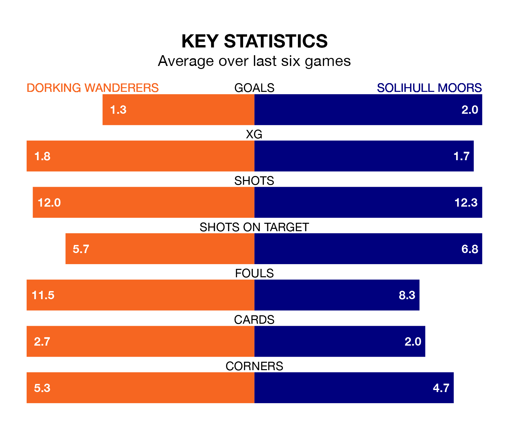

Relegation candidates Dorking Wanderers face a challenge against high-flying Solihull Moors at the Meadowbank Stadium on Saturday.
Dorking Wanderers are 22nd in the National League table, and have picked up 12 wins and five draws in their 38 games to date.
The Moors, meanwhile, are fourth in the standings with 64 points, having won 18 and drawn 10, and are 27 points behind table-toppers Chesterfield.
With 46 goals in 38 games so far this season, Dorking are scoring at below the league average rate with 1.2 goals per game. And they are conceding more than average, letting in 66 goals at a rate of 1.7 per game.
Solihull Moors, meanwhile, are above average scorers, with 1.6 goals per game, compared to a league average of 1.5. They have conceded 1.4 goals per game.
Wanderers are in bad form in the National League, with one win and a draw from their last six games.
With three wins and two draws over that period, the Moors's form is much better – they have taken 11 points from 18, compared to the hosts' four.
In the last three years, Dorking and Solihull Moors have played each other on three occasions. Solihull Moors won all of them.
Their last meeting was on August 19, when Solihull Moors won 3-0 at home.
Dorking's last match was on Tuesday, a 2-0 loss against Southend United.
Solihull Moors beat Boreham Wood 2-0 last time out, also on Tuesday, with Callum Maycock and Tahvon Campbell on the scoresheet.
Updated: 15:10 (UTC), 15/03/24